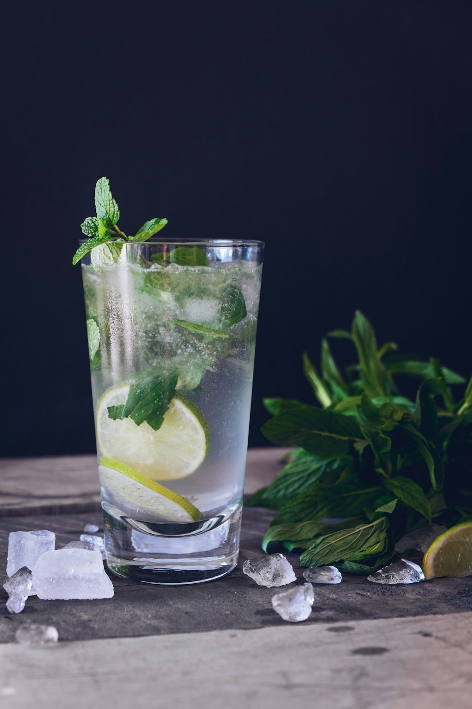

100% Loose Leaves
We never use commercial instant tea powders or artificial flavor extracts. We brew whole-leaf high mountain oolong, floral jasmine green, and Ceylon black teas.
At Central Tea House, our brewing begins with temperature-controlled kettle steeping, premium single-origin whole leaves, and scratch-prepared toppings. Customize every cup to your exact taste.

The difference is evident in the depth of aroma, balanced tannin structure, and clean finish.
We never use commercial instant tea powders or artificial flavor extracts. We brew whole-leaf high mountain oolong, floral jasmine green, and Ceylon black teas.
Our cassava root tapioca pearls are cooked fresh throughout the day and simmered in authentic Taiwanese dark brown sugar syrup for optimal chew and warmth.
Our Vietnamese coffee is extracted drop-by-drop through stainless steel phin filters using dark roast robusta beans for maximum chocolatey strength.
Every beverage can be tailored across four key dimensions.